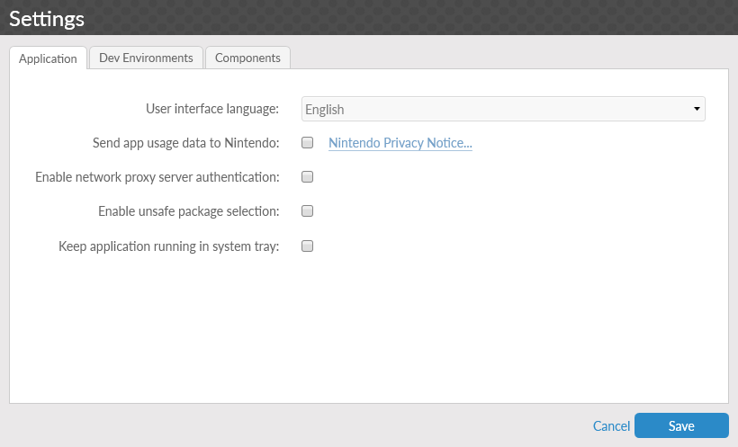
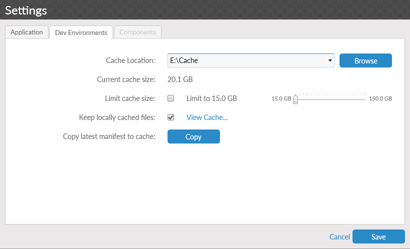
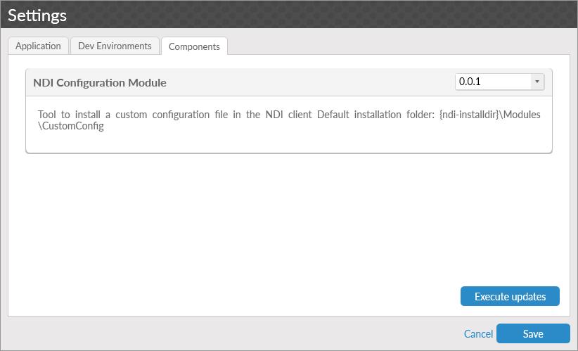

The Settings window allows for configuration of the Nintendo Dev Interface (NDI) application. Described in the following, the window is divided into three tabs based on function.
Application Tab

-
User interface language: Changes the display language of NDI.
-
Send app usage data to Nintendo: If enabled, usage data is reported to Nintendo to allow the support and improvement of NDI. The Nintendo Privacy Notice link opens a page providing further details.
-
Enable network proxy server authentication: If selected, when authentication with a proxy server is required, NDI saves the required information for future authentications. When NDI is started for the first time, this option is selected.
-
Enable unsafe package selection: If selected, you are able to choose packages that are not suitable or compatible with other selected packages when creating and updating environments. Unsafe package selection is occasionally used for specific high-risk installation scenarios. Unsafe selections may lead to unstable environments or data.
-
Keep application running in system tray: If selected, when NDI is closed by using the close button in the upper right corner of the application window, the application will instead minimize to the system tray. The application can be exited completely by using the system tray menu.
Dev Environments Tab

-
Cache Location: The directory where files downloaded by the client are located.
-
Current cache size: Displays the total size of all files in the current Cache Location.
-
Limit cache size: If selected, NDI controls the maximum amount of data that can be present in the NDI cache. The slider to the right of the option determines the maximum size of the cache. Each time NDI is started while this option is enabled, files are removed from the cache until the total size of all files in the cache is below the selected value. Files are removed from oldest to newest.
-
Keep locally cached files: If selected, files that are downloaded remain in the cache after NDI is closed.
-
Copy latest manifest to cache: Creates a copy of the current manifest file in the current cache location. Used in certain debugging scenarios for NDI.
Components Tab

The Components tab contains a list of NDI modules that are available on the currently connected server, and any modules that have previously been installed. Installed modules provide additional features to NDI, based on the individual module selected. To make selections, install, or reinstall these modules, select the appropriate option from the drop-down list box on the right and click Execute updates. In most cases, to complete the installation, you should restart NDI after completing this process.
Info
The Components tab is only accessible when the Settings menu is accessed from the Welcome screen.
Required Components
Some components allow NDI to function correctly or provide additional features to the application. These required components are downloaded automatically when connected to the server and are indicated when they are installed. Required components are displayed on the Components tab, but cannot be uninstalled.